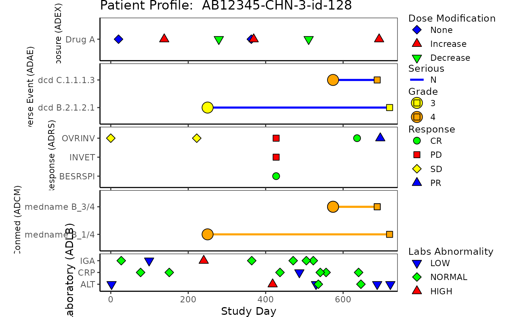
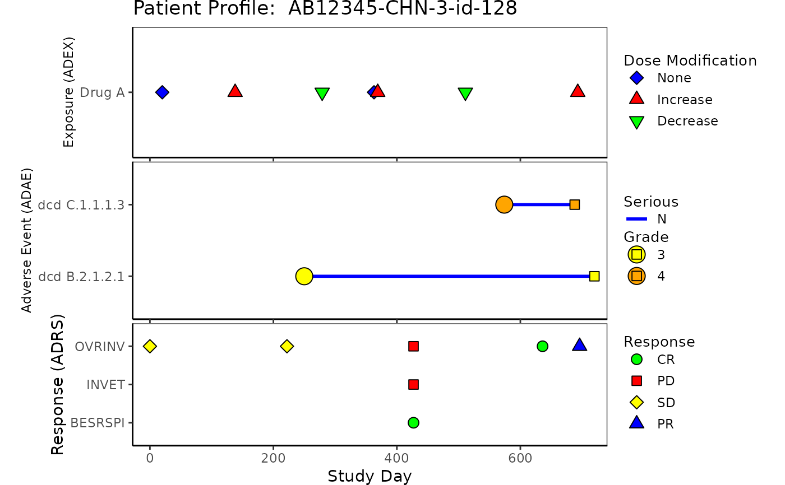

Patient profile plot provides detailed information for a specific subject participating in the study.
The plot includes relevant data for one subject that can help correlate adverse events, response,
concomitant medications, exposure, and laboratory. The plotting of patient profile is modularized, with
each domain plot generated by function patient_domain_profile. This g_patient_profile
function assembles all requested domain plots into one patient profile.
ADSL, ADEX, ADAE, ADRS, ADCM and ADLB data must be provided.
The plot output will not include domains with data unspecified
g_patient_profile(
ex = NULL,
ae = NULL,
rs = NULL,
cm = NULL,
lb = NULL,
arrow_end_day,
xlim = c(-28, 365),
xlab = "Study Day",
title = "Patient Profile"
)list may contain
data dataframe for ADEX domain dataset
var vector to identify each lane of ADEX domain plot
list may contain
data dataframe for ADAE domain dataset
var vector to identify each lane of ADAE plot
line_col factor vector to specify color for segments of ADAE plot
line_col_legend string to be displayed as line color legend title of ADAE plot
line_col_opt aesthetic values to map line color values of ADAE plot
(named vector to map color values to each name).
If not NULL, please make sure this contains all possible values for line_col values,
otherwise color will be assigned by ggplot default, please note that NULL needs to be
specified
list may contain
data dataframe for ADRS domain dataset
var vector to identify each lane of ADRS domain plot
list may contain
data dataframe for ADCM domain dataset
var vector to identify each lane of ADCM domain plot
list may contain
data dataframe for ADLB domain dataset
var vector to identify each lane of ADLB domain plot
numeric value indicates the end of arrow when arrows are requested
numeric vector for x-axis limit that will be shared by all domain plots, default is
xlim = c(-28, 365)
string to be shown as x-axis label, default is "Study Day"
string to be shown as title of the plot, default is "Patient Profile"
plot object
library(scda)
library(tern)
#> Loading required package: rtables
#> Loading required package: magrittr
#>
#> Attaching package: ‘tern’
#> The following object is masked from ‘package:osprey’:
#>
#> g_waterfall
library(dplyr)
# ADSL
rADSL <- synthetic_cdisc_data("latest")$adsl
ADSL <- rADSL %>%
group_by(USUBJID) %>%
mutate(
TRTSDT = as.Date(TRTSDTM),
max_date = max(as.Date(LSTALVDT), as.Date(DTHDT), na.rm = TRUE),
max_day = as.numeric(as.Date(max_date) - as.Date(TRTSDT)) + 1
) %>%
select(USUBJID, STUDYID, TRTSDT, max_day) %>%
filter(USUBJID == rADSL$USUBJID[1])
#> Warning: no non-missing arguments to max; returning -Inf
#> Warning: no non-missing arguments to max; returning -Inf
#> Warning: no non-missing arguments to max; returning -Inf
#> Warning: no non-missing arguments to max; returning -Inf
#> Warning: no non-missing arguments to max; returning -Inf
#> Warning: no non-missing arguments to max; returning -Inf
#> Warning: no non-missing arguments to max; returning -Inf
#> Warning: no non-missing arguments to max; returning -Inf
#> Warning: no non-missing arguments to max; returning -Inf
#> Warning: no non-missing arguments to max; returning -Inf
#> Warning: no non-missing arguments to max; returning -Inf
#> Warning: no non-missing arguments to max; returning -Inf
#> Warning: no non-missing arguments to max; returning -Inf
#> Warning: no non-missing arguments to max; returning -Inf
#> Warning: no non-missing arguments to max; returning -Inf
#> Warning: no non-missing arguments to max; returning -Inf
#> Warning: no non-missing arguments to max; returning -Inf
#> Warning: no non-missing arguments to max; returning -Inf
#> Warning: no non-missing arguments to max; returning -Inf
#> Warning: no non-missing arguments to max; returning -Inf
#> Warning: no non-missing arguments to max; returning -Inf
#> Warning: no non-missing arguments to max; returning -Inf
#> Warning: no non-missing arguments to max; returning -Inf
#> Warning: no non-missing arguments to max; returning -Inf
#> Warning: no non-missing arguments to max; returning -Inf
#> Warning: no non-missing arguments to max; returning -Inf
#> Warning: no non-missing arguments to max; returning -Inf
#> Warning: no non-missing arguments to max; returning -Inf
#> Warning: no non-missing arguments to max; returning -Inf
#> Warning: no non-missing arguments to max; returning -Inf
#> Warning: no non-missing arguments to max; returning -Inf
#> Warning: no non-missing arguments to max; returning -Inf
#> Warning: no non-missing arguments to max; returning -Inf
#> Warning: no non-missing arguments to max; returning -Inf
#> Warning: no non-missing arguments to max; returning -Inf
#> Warning: no non-missing arguments to max; returning -Inf
#> Warning: no non-missing arguments to max; returning -Inf
#> Warning: no non-missing arguments to max; returning -Inf
#> Warning: no non-missing arguments to max; returning -Inf
#> Warning: no non-missing arguments to max; returning -Inf
#> Warning: no non-missing arguments to max; returning -Inf
#> Warning: no non-missing arguments to max; returning -Inf
#> Warning: no non-missing arguments to max; returning -Inf
#> Warning: no non-missing arguments to max; returning -Inf
#> Warning: no non-missing arguments to max; returning -Inf
#> Warning: no non-missing arguments to max; returning -Inf
#> Warning: no non-missing arguments to max; returning -Inf
#> Warning: no non-missing arguments to max; returning -Inf
#> Warning: no non-missing arguments to max; returning -Inf
#> Warning: no non-missing arguments to max; returning -Inf
#> Warning: no non-missing arguments to max; returning -Inf
#> Warning: no non-missing arguments to max; returning -Inf
#> Warning: no non-missing arguments to max; returning -Inf
#> Warning: no non-missing arguments to max; returning -Inf
#> Warning: no non-missing arguments to max; returning -Inf
#> Warning: no non-missing arguments to max; returning -Inf
#> Warning: no non-missing arguments to max; returning -Inf
#> Warning: no non-missing arguments to max; returning -Inf
#> Warning: no non-missing arguments to max; returning -Inf
#> Warning: no non-missing arguments to max; returning -Inf
#> Warning: no non-missing arguments to max; returning -Inf
#> Warning: no non-missing arguments to max; returning -Inf
#> Warning: no non-missing arguments to max; returning -Inf
#> Warning: no non-missing arguments to max; returning -Inf
#> Warning: no non-missing arguments to max; returning -Inf
#> Warning: no non-missing arguments to max; returning -Inf
#> Warning: no non-missing arguments to max; returning -Inf
#> Warning: no non-missing arguments to max; returning -Inf
#> Warning: no non-missing arguments to max; returning -Inf
#> Warning: no non-missing arguments to max; returning -Inf
# ADEX
rADEX <- synthetic_cdisc_data("latest")$adex
ADEX <- rADEX %>%
select(USUBJID, STUDYID, ASTDTM, PARCAT2, AVAL, AVALU, PARAMCD)
ADEX <- left_join(ADSL, ADEX, by = c("USUBJID", "STUDYID"))
ADEX <- ADEX %>%
filter(PARAMCD == "DOSE") %>%
arrange(PARCAT2, PARAMCD) %>%
mutate(diff = c(0, diff(AVAL, lag = 1))) %>%
mutate(Modification = case_when(
diff < 0 ~ "Decrease",
diff > 0 ~ "Increase",
diff == 0 ~ "None"
)) %>%
mutate(ASTDT_dur = as.numeric(
as.Date(substr(as.character(ASTDTM), 1, 10)) -
as.Date(TRTSDT) + 1
))
# ADAE
rADAE <- synthetic_cdisc_data("latest")$adae
ADAE <- rADAE %>%
select(USUBJID, STUDYID, AESOC, AEDECOD, AESER, AETOXGR, AEREL, ASTDY, AENDY)
ADAE <- left_join(ADSL, ADAE, by = c("USUBJID", "STUDYID"))
# ADRS
rADRS <- synthetic_cdisc_data("latest")$adrs
ADRS <- rADRS %>%
select(USUBJID, STUDYID, PARAMCD, PARAM, AVALC, AVAL, ADY, ADTM)
ADRS <- left_join(ADSL, ADRS, by = c("USUBJID", "STUDYID"))
# ADCM
rADCM <- synthetic_cdisc_data("latest")$adcm
ADCM <- rADCM %>%
select(USUBJID, STUDYID, ASTDTM, AENDTM, CMDECOD, ASTDY, AENDY)
ADCM <- left_join(ADSL, ADCM, by = c("USUBJID", "STUDYID"))
# ADLB
rADLB <- synthetic_cdisc_data("latest")$adlb
ADLB <- rADLB %>%
select(
USUBJID, STUDYID, LBSEQ, PARAMCD, BASETYPE, ADTM,
ADY, ATPTN, AVISITN, LBTESTCD, ANRIND
)
ADLB <- left_join(ADSL, ADLB, by = c("USUBJID", "STUDYID"))
ADLB <- ADLB %>%
group_by(USUBJID) %>%
mutate(ANRIND = factor(ANRIND, levels = c("LOW", "NORMAL", "HIGH")))
# Example Patient Profile plot 5 domains
g_patient_profile(
ex = list(
data = ADEX,
var = ADEX$PARCAT2
),
ae = list(
data = ADAE,
var = ADAE$AEDECOD,
line_col = factor(ADAE$AESER),
line_col_legend = "Serious",
line_col_opt = c("Y" = "red", "N" = "blue")
),
rs = list(
data = ADRS,
var = ADRS$PARAMCD
),
cm = list(
data = ADCM,
var = ADCM$CMDECOD
),
lb = list(
data = ADLB,
var = ADLB$LBTESTCD
),
arrow_end_day = ADSL$max_day,
xlim = c(-28, ADSL$max_day),
xlab = "Study Day",
title = paste("Patient Profile: ", ADSL$USUBJID)
)
#> Warning: `guides(<scale> = FALSE)` is deprecated. Please use `guides(<scale> = "none")` instead.
#> Warning: `guides(<scale> = FALSE)` is deprecated. Please use `guides(<scale> = "none")` instead.
#> Warning: `guides(<scale> = FALSE)` is deprecated. Please use `guides(<scale> = "none")` instead.
#> Warning: `guides(<scale> = FALSE)` is deprecated. Please use `guides(<scale> = "none")` instead.

# Example Patient Profile plot without ADCM and ADLB
g_patient_profile(
ex = list(
data = ADEX,
var = ADEX$PARCAT2
),
ae = list(
data = ADAE,
var = ADAE$AEDECOD,
line_col = factor(ADAE$AESER),
line_col_legend = "Serious",
line_col_opt = c("Y" = "red", "N" = "blue")
),
rs = list(
data = ADRS,
var = ADRS$PARAMCD
),
arrow_end_day = ADSL$max_day,
xlim = c(-28, ADSL$max_day),
xlab = "Study Day",
title = paste("Patient Profile: ", ADSL$USUBJID)
)
#> Warning: `guides(<scale> = FALSE)` is deprecated. Please use `guides(<scale> = "none")` instead.
